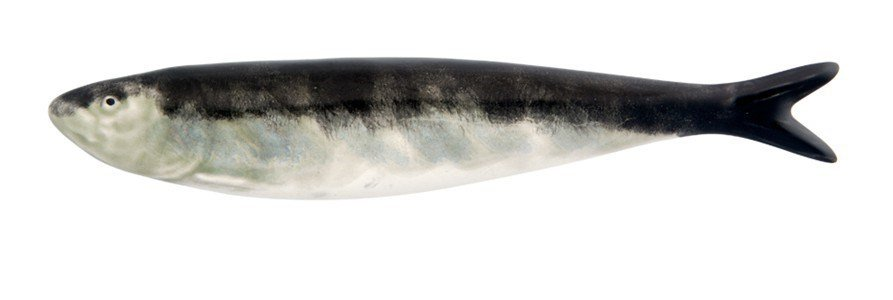

About
SARDINE (Structure AwaRe moDelIng for Natural LanguagE) is a research group at Instituto de Telecomunicações and Instituto Superior Técnico, in Lisbon, Portugal, led by André Martins.
We carry out research in Natural Language Processing, Deep Learning, Structured Predition, and Sparse Modeling.
Check out our amazing team, our ongoing projects, and some of our publications.
|  |
Why SARDINE?
A sardine (sardina pilchardus, "sardinha" in Portuguese) is a fish commonly found in the Northeast Atlantic and Mediterranean, where it inhabits the water column in coastal zones between 25-100 m of depth. It has an elongated body covered with scales, with a darker blue-silvery coloured back and lighter silvery coloured sides and belly. It spawns from October to April when it is leaner, and females can release 50,000 to 60,000 eggs. Sardines are a much appreciated delicacy in Portugal, most prominently at city summer festivals such as Santo António festival in Lisbon.

|